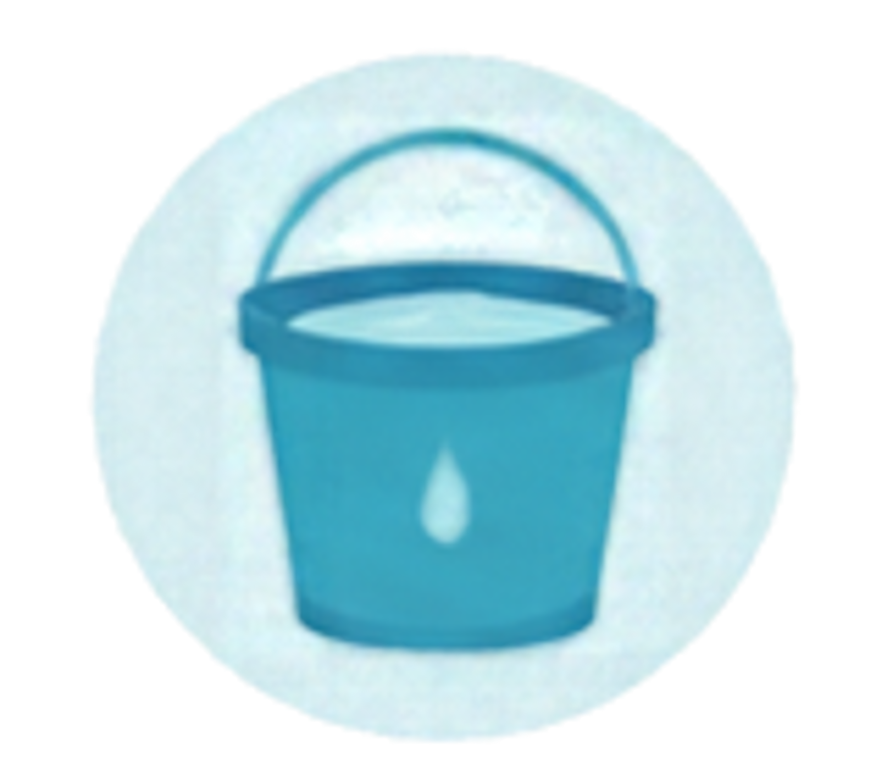

Turn off the tap
Shut off the tap when not in use to save clean water.
Small actions today can protect our future. Simple choices make a lasting impact.

Shut off the tap when not in use to save clean water.

Repair leaks quickly to prevent water waste at home.

Collect and reuse water for cleaning and gardening.

Use products that are gentle on water and the environment.
Sample data
(SAMPLE DATA)
(SAMPLE DATA)
(SAMPLE DATA)